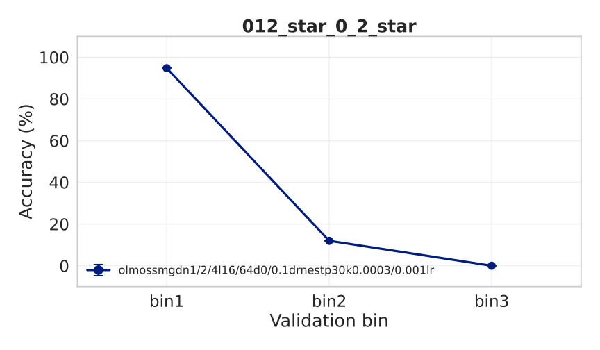
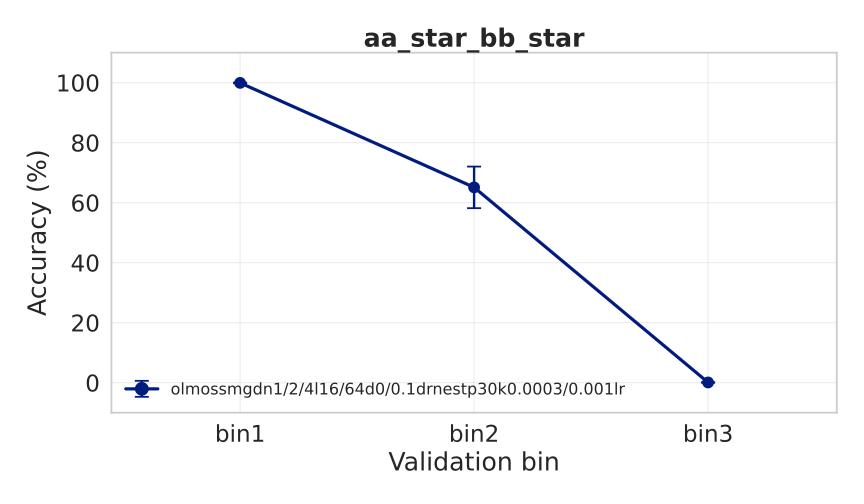
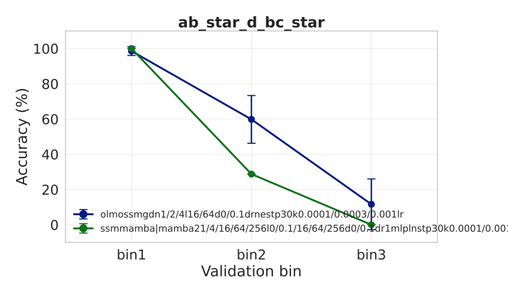

Formal languages — SSM plots
green border: olmossm has a run above 98.0% in every validation bin (0 of 17 tasks).
Source: summary.csv, 3 bins, plots from run_formal_lang_ssm_plot.sh.
Generated 2026-08-16 14:36.
3 task(s) produced no plot.
012_star_0_2_star

aa_star_bb_star

ab_star_d_bc_star

tomita_4
no plot generated
tomita_5
no plot generated